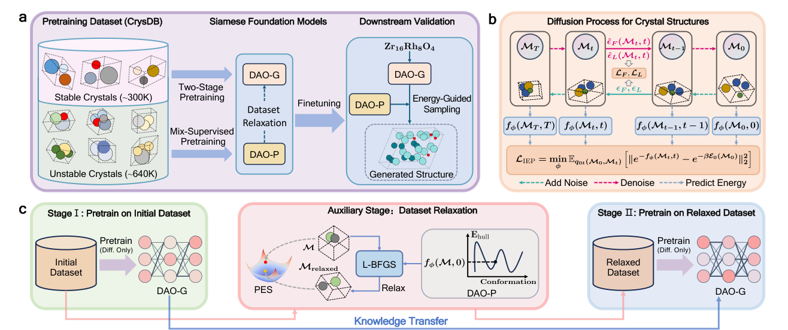
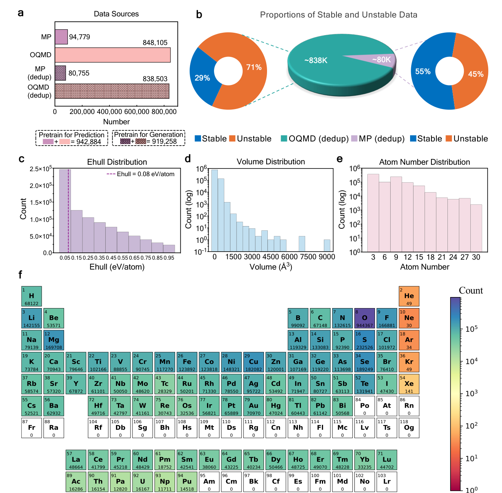
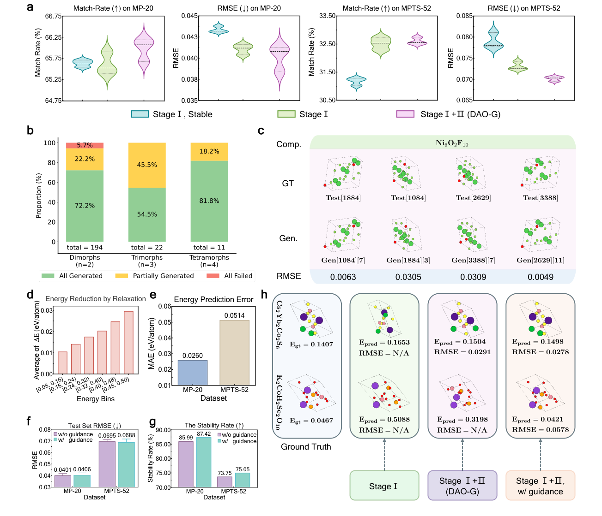
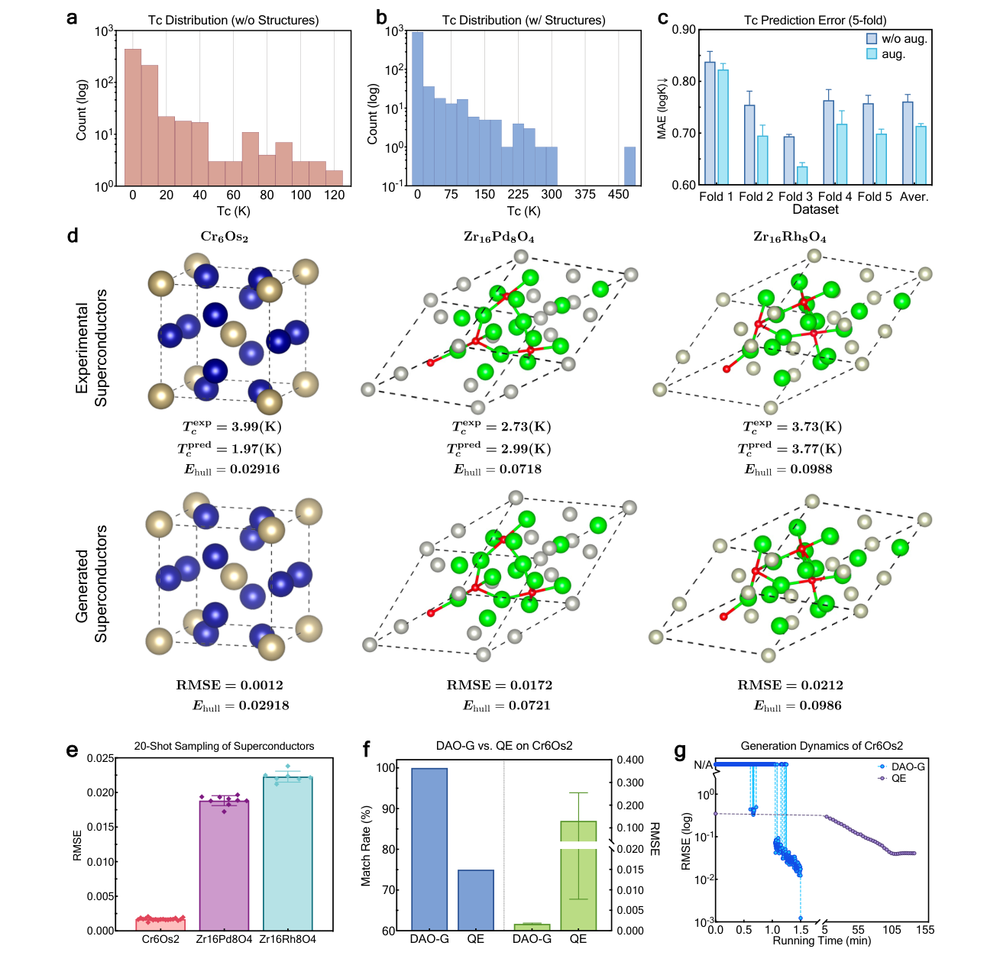

Crystal structure prediction is one of the places where materials science still feels stubbornly physical. A composition is not enough. The same formula can support many lattices, stackings, distortions, and polymorphs, and the useful answer depends on which of those arrangements falls into the right part of the energy landscape. This is why structure prediction has never been only a machine learning problem. It is a search problem, an energy problem, and a geometry problem at the same time.
The paper by Wu, Huang, Jiao, and coauthors is interesting because it does not treat these pieces as separate tools. It builds a pair of foundation models for crystal structure prediction. One model generates structures. The other predicts energy and teaches the generator where the lower energy regions should be. The authors call the framework DAO, with DAO-G as the generator and DAO-P as the predictor.
The important idea is not simply that a larger model is trained on a larger dataset. The important idea is that the model is asked to learn from structures that are not already stable. Most materials datasets are biased toward known or low energy structures, which is sensible for property prediction but limiting for search. A structure predictor needs to understand not only the bottom of the basin, but also the slopes that lead toward it. This paper makes that intuition explicit by using unstable structures as training material and then relaxing them with an energy model before continuing pretraining.
Why this is a real structure prediction problem
It is tempting to compare this work to protein folding. The paper does that too. But crystals are different in a way that matters. A protein sequence fixes an ordered chain. A crystal composition does not fix the number of sites, the lattice vectors, the Wyckoff pattern, the atom ordering, or the polymorph. The output space is less constrained by the input. A model has to create a periodic three dimensional structure from only a chemical formula.
That is why the pretraining task matters. DAO-G is not merely learning a property of finished structures. It is learning the conditional distribution of lattice and fractional coordinates given composition. In other words, the downstream task is present from the beginning. The model is pretrained to do the same type of operation it will later be asked to do during crystal structure prediction.

The Siamese language is useful here because the two models are not independent. DAO-P shapes the training data by relaxing unstable structures. It also guides the sampling process when DAO-G generates new structures. In the other direction, DAO-G can create structures for systems where only composition and property labels are available, which then helps DAO-P with downstream property prediction. The two models are different parts of the same discovery loop.
The clever part is using unstable structures
The paper constructs a pretraining dataset called CrysDB from the Materials Project and OQMD. It contains roughly 940,000 entries before deduplication, and the generator pretraining version contains about 919,000 entries after removing structures that would leak into the benchmark tests. The dataset includes both stable and unstable crystals, with energy above the convex hull used to define stability.

This is the part I find most chemically meaningful. In a DFT structure search, failed structures are still information. A configuration that relaxes away from a bad arrangement teaches us about the local shape of the potential energy surface. The usual database view treats that structure as less useful because it is not stable. The search view treats it as a signpost. DAO is trying to turn those signposts into pretraining data.
The workflow is also practical. Instead of using DFT to relax every candidate during pretraining, DAO-P supplies gradients and L-BFGS relaxation. This does not make DAO-P a replacement for DFT validation. It makes DAO-P a cheap inner-loop guide. That distinction is important. Expensive electronic structure should still decide the final answer, but it does not have to be called every time the model needs a direction.
Pretraining changes the benchmark behavior
The benchmark results are strong, but they are most useful when read carefully. On MP-20, large-scale pretraining raises the match rate of the Crysformer diffusion model from 51.55 percent to 65.60 percent. When the same architecture is paired with flow matching, the match rate reaches 74.17 percent on MP-20 and 42.01 percent on MPTS-52. These are one-shot numbers, so they measure how often the model can hit a plausible structure without being allowed many attempts.
The MPTS-52 result is the more honest stress test. MP-20 contains smaller structures. MPTS-52 allows up to 52 atoms and therefore moves closer to the complexity that matters in real materials discovery. DAO improves the result, but it does not solve it. The authors acknowledge that the pretraining dataset only includes structures with 3 to 30 atoms, which likely limits transfer to larger cells. This is exactly the kind of failure mode that should be visible rather than hidden.

The polymorph tests are also important. A structure predictor should not assume that each composition has one answer. Polymorphism is not an exception in materials chemistry. It is often the central problem. DAO-G generates multiple conformations for several test compositions, including a four-polymorph Ni6O2F10 example where generated structures match all four reference conformations with low coordinate errors. That is closer to how structure prediction should behave. It should return a landscape of plausible structures, not a single oracle answer.
Why the superconductor test is useful but not magic
The most attention-grabbing part of the paper is the superconductor test. The authors finetune DAO-G on superconductors with known structures, use it to generate missing structures for additional compositions, and then use DAO-P to predict critical temperature. For three real-world superconductors that were held out from both pretraining and finetuning, the generated structures are very close to the reported references. Cr6Os2 is the clearest case, with a 100 percent match rate across 20 generations and an RMSE of 0.0012 for the best structure.

This is a useful validation because superconductors often have complicated unit cells and because structure sensitivity matters for critical temperature. But it should not be oversold. The examples are still validation examples. They show that the model can recover difficult held out structures and can improve a Tc prediction workflow. They do not yet show autonomous discovery of a new high temperature superconductor.
That limitation does not weaken the paper. It makes the contribution clearer. DAO is a framework for making structure generation fast enough to become part of a discovery workflow. The paper reports that, for Cr6Os2, the DAO-G sampling loop is more than 2000 times faster per iteration than a Quantum ESPRESSO based optimizer. That speed matters because structure prediction usually fails by exhausting the budget before exhausting the search space.
What I would trust and what I would still verify
I would trust this framework as a powerful generator of candidates. I would not trust it as a final judge of stability. That is not a criticism. It is the right division of labor. A model trained on databases can learn broad structural priors, local chemical geometry, and the rough shape of the energy landscape. It can rank and generate. It can make the search smaller and better organized. But the final questions still require physics based validation.
This matters most for the systems that interest me. High pressure hydrides, interstitial electron phases, low dimensional defects, and metastable polymorphs often depend on small energy differences. A structure can look chemically reasonable and still fail after phonon calculations. A generated hydride can have the right composition and the wrong hydrogen network. A material can sit near the convex hull but be inaccessible because of kinetic barriers. These are not details that a benchmark match rate can fully capture.
There is also the issue of electronic interpretation. DAO can propose a structure, but it does not explain why the structure is interesting. For materials discovery, the proposed structure is only the beginning. We still need to ask how electrons localize, which orbitals form the active states, whether a void is chemically inert or electride-like, and how the bonding mechanism changes under pressure or confinement. A fast structure model becomes most valuable when it feeds into that interpretive layer rather than replacing it.
How this fits into materials discovery
My favorite way to read this paper is as a shift in where machine learning sits in the workflow. In older screening workflows, machine learning often predicts a scalar property after a candidate structure is already known. In DAO, the model acts earlier. It helps create the candidate structure itself. That is a much harder task, but it is also much more useful when the structure space is the bottleneck.
This connects naturally to template guided discovery. In superhydride searches, a good metal framework can make an otherwise impossible hydrogen network chemically plausible. In electride chemistry, an interstitial electron basin can be an active site rather than empty space. In both cases, structure generation is not arbitrary. It should be biased by physical constraints and by learned experience from previous searches. DAO provides one possible way to encode that experience at scale.
The next step I would want is tighter coupling between generated structures and physically meaningful diagnostics. For high pressure materials, the generator should be judged not only by structural match rate but also by whether it recovers pressure dependent enthalpy trends, dynamic stability, and electronic mechanisms. For hydrides, it should be tested on hydrogen networks that are large, noninteger, and polymorphic. For low dimensional materials, it should handle defects, reconstructions, and slab geometries. Those are the regimes where structure prediction is most useful because intuition is weakest.
What I take from it
The paper does not remove the need for DFT, crystal structure prediction, or chemical interpretation. It changes how often those expensive tools need to be called. That is a meaningful advance.
The best part of DAO is that it treats instability as useful information. Bad structures are not only failures. They are samples from the parts of the energy landscape that teach a generator where not to stay and how to move toward better regions. This is a very materials-science way of using data. The negative examples are not noise. They are the slopes of the search problem.
If this direction works, foundation models for materials will not simply be property predictors trained on larger databases. They will become search partners that propose structures, expose uncertainty, and hand the most promising candidates to first principles methods for validation and interpretation. That is the version of AI for materials discovery that feels scientifically useful. Not a replacement for chemistry, but a faster way to decide where chemistry should look next.
References
- Wu, L., Huang, W., Jiao, R. and coauthors. Siamese foundation models for crystal structure prediction. Nature Communications. 2026. doi 10.1038/s41467-026-72362-3. arXiv 2503.10471v2.
- Jain, A. and coauthors. Commentary. The Materials Project. A materials genome approach to accelerating materials innovation. APL Materials. 2013.
- Kirklin, S. and coauthors. The Open Quantum Materials Database. npj Computational Materials. 2015.
- Jiao, R. and coauthors. Crystal structure prediction by joint equivariant diffusion. NeurIPS. 2023.
- MatterGen authors. A generative model for inorganic materials design. Nature. 2025.
Figures are reproduced from reference 1 under the Creative Commons Attribution 4.0 license.